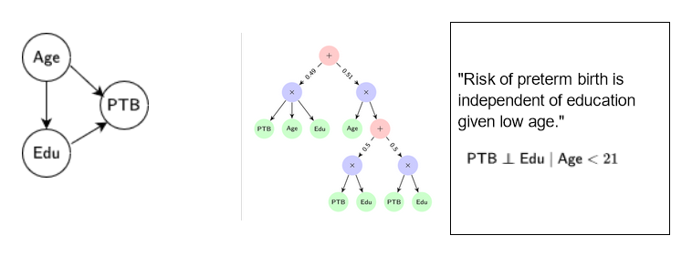
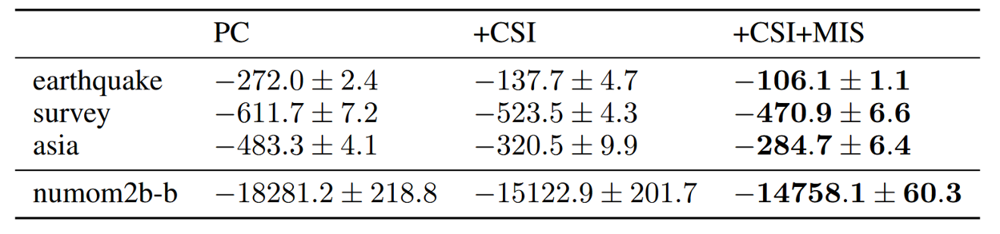
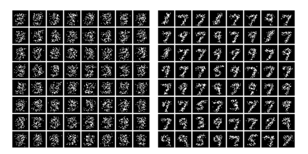

A Unified Framework for Human-Allied Learning of Probabilistic Circuits
Athresh Karanam, Saurabh Mathur, Sahil Sidheekh, Sriraam Natarajan · AAAI 2025
Accepted at the 39th Annual AAAI Conference on Artificial Intelligence (AAAI) 2025. In this work: (1) we propose a unified framework for representing domain knowledge as probabilistic constraints that subsumes existing methods, with six particular instantiations; (2) we propose an augmented objective function for exploiting multiple forms of domain knowledge when learning tractable probabilistic models, optimizable via generic parameter-learning algorithms; (3) we experimentally validate the added utility of our approach on several benchmark and real-world scenarios where data is limited but knowledge is abundant.
Probabilistic Generative Models
Probabilistic generative models like Bayesian networks are a powerful framework for representing and reasoning about relationships between variables — well-suited to complex domains like healthcare, where understanding those relationships is crucial for clinical decision-making. But reasoning with them requires probabilistic inference, which is intractable in general.

A Bayesian network (left) over three variables — Age, Education level, and risk of preterm birth — a Probabilistic Circuit (middle) over the same domain, and domain knowledge (right) in the form of context-specific independence.
Tractable Probabilistic Modeling via Probabilistic Circuits
Probabilistic circuits have emerged as an effective solution to the tractable-inference problem, representing the joint distribution as a computational graph — exploiting the power of deep learning while maintaining probabilistic semantics. But constructing them is challenging: complex real-world domains like healthcare often suffer from data scarcity, so effective learning requires combining small datasets with diverse forms of domain knowledge.
A Unified Framework for Human-Allied Learning of PCs
To construct tractable probabilistic generative models from small datasets by exploiting multiple forms of domain knowledge, we propose a unified framework for human-allied learning of probabilistic circuits. It accommodates any form of domain knowledge whose violation can be measured by a differentiable function — high-level relationships like monotonicity and independence, generalization constraints like symmetry and exchangeability, and predictive constraints like class-imbalance trade-offs.
Our approach treats domain knowledge as soft constraints, encoded as a violation term used for regularization — frustratingly simple. This gives an optimization problem of the form:
To enforce domain knowledge as hard constraints instead, we propose an iterative procedure that gradually increases the weight of the knowledge-based penalty.
Empirical Evaluation
We evaluated our approach across synthetic tabular data sampled from Bayesian networks, medical datasets from the UCI Machine Learning repository, MNIST images, complex manifolds, and a real clinical domain focused on adverse pregnancy outcomes (numom2b). Our experiments demonstrate the efficacy of integrating patterns learned from data with multiple forms of domain knowledge.

Generative performance of PCs learned from data and multiple forms of domain knowledge, quantified via average test-set log-likelihood. PCs exploiting multiple forms of knowledge (context-specific independence and monotonicity) outperform those restricted to one form (context-specific independence) and purely data-driven ones.

Images sampled from PCs learned on a point-cloud version of MNIST digits, which exhibits permutation invariance — a symmetry difficult to model even for advanced generative models like GANs and VAEs. Left: sampled from a PC learned purely from data. Right: sampled from a PC learned by exploiting domain knowledge about the point cloud's symmetries.
Citation
@inproceedings{karanam2024unified,
title = {A Unified Framework for Human-Allied Learning of Probabilistic Circuits},
author = {Karanam, Athresh and Mathur, Saurabh and Sidheekh, Sahil and Natarajan, Sriraam},
booktitle = {The 39th Annual AAAI Conference on Artificial Intelligence (AAAI)},
year = {2025}
}
Acknowledgements
The authors gratefully acknowledge the generous support of NIH grant R01HD101246, AFOSR award FA9550-23-1-0239, ARO award W911NF2010224, and the DARPA Assured Neuro Symbolic Learning and Reasoning (ANSR) award HR001122S0039.